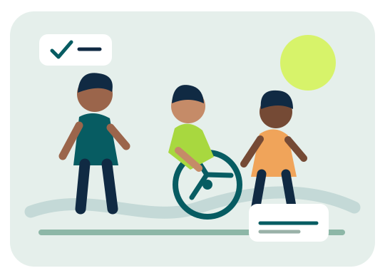

Espaços e serviços
Veja como transporte, calçadas, escolas, comércio e atendimento podem acolher diferentes necessidades.
Acessibilidade no cotidianoAcessibilidade é participação
Acessibilidade é garantir que cada pessoa consiga perceber, compreender, navegar e participar. Não é um detalhe: é parte de uma sociedade que respeita diferentes formas de viver.

O que você vai encontrar
Uma calçada sem obstáculos, uma informação fácil de entender e um site que funciona pelo teclado têm algo em comum: todos ampliam a autonomia.
Veja como transporte, calçadas, escolas, comércio e atendimento podem acolher diferentes necessidades.
Acessibilidade no cotidianoEntenda por que uma tarefa simples para uma pessoa pode ser difícil quando o ambiente não oferece alternativas.
Conhecer as barreirasConheça leitores de tela, ampliadores, linhas Braille e outros recursos que ajudam no acesso à informação.
Explorar tecnologiasQuando a acessibilidade é planejada desde o início, mais pessoas conseguem usar os mesmos espaços, serviços e informações com independência.
Uma ideia que orienta todo o projeto
Da teoria à prática
As diretrizes WCAG organizam a acessibilidade em quatro princípios. Eles ajudam a pensar se o conteúdo pode ser percebido, operado, compreendido e interpretado por diferentes tecnologias.
Apresente informações de maneiras que as pessoas consigam perceber, como texto alternativo e legendas.
Permita navegar e usar controles, inclusive sem mouse e sem movimentos precisos.
Use linguagem clara, organização consistente e comportamentos previsíveis.
Construa código compatível com navegadores e tecnologias assistivas atuais e futuras.
Confira práticas concretas para criar uma página mais acessível e testar o resultado.